In this project I added additional features to my pathtracing program (Mirror and Glass Materials + Microfacet Materials).
For both parts, support for rendering realistic reflective/refrative/metallic objects are achieved by modeling the mathmatics/physics behind
light behavior in the real world.
In this part, reflection and refraction BSDFs are implemented to render mirror and glass, respectively. The former involved a simple changing of vector direction of the incoming light while setting the pdf to 1 because no sampling were done. The latter took into account an index of reflection as light enters the material and calculates if a total internal refraction occurs, in which light wouldn't be coming out.
Show a sequence of six images of scene `CBspheres.dae` rendered with `max_ray_depth` set to 0, 1, 2, 3, 4, 5, and 100. The other settings should be at least 64 samples per pixel and 4 samples per light. Make sure to include all screenshots.
|
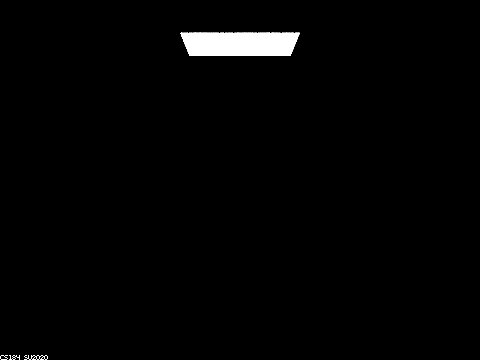
|
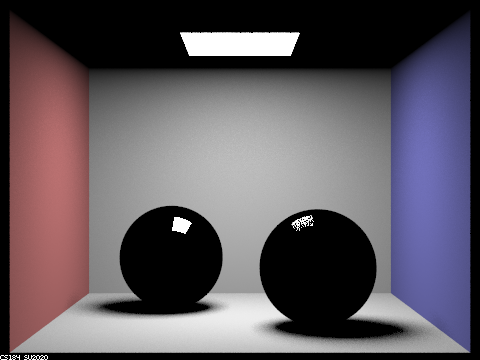
|
|
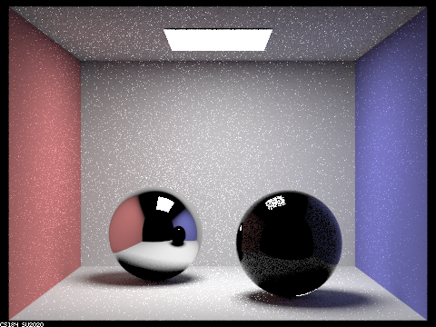
|
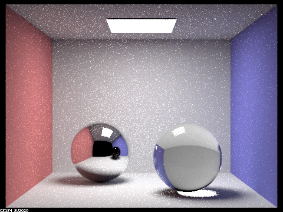
|
|
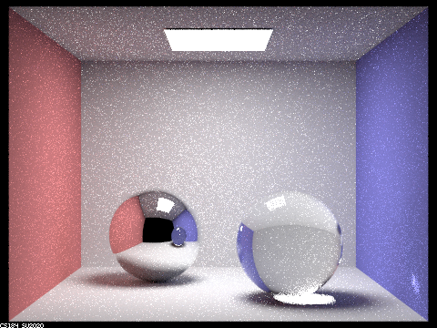
|
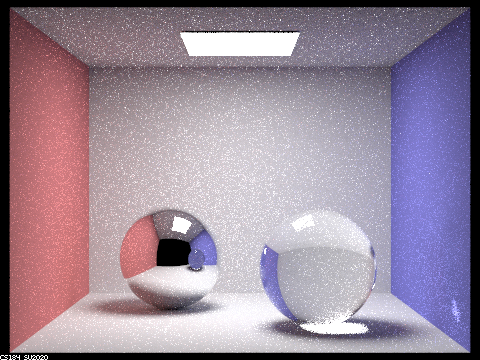
|
|
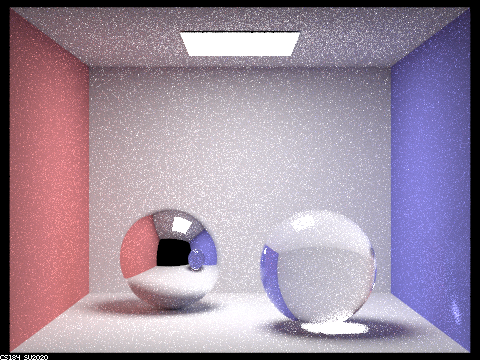
|
Point out the new multibounce effects that appear in each image.
On bounce 0 only the light source shows.
On bounce 1 the room and light source reflected on the spheres are added.
On bounce 2 the reflections on spheres are added with the mirror sphere's being more clear than the glass sphere's.
Global illumination also colors the shadows.
On bounce 3 the glass sphere is rendered but the change isn't reflected yet on the mirror.
On bounce 4 and this is corrected.
Explain how these bounce numbers relate to the particular effects that appear. Make sure to include all screenshots.
On bounce 0 we only see the light source because it is the only surface emitting light straight to the camera without any transition bounces in the midlle.
On bounce 1 we see the room but not the spheres because the spheres themselves do not have inherent colors. They need to reflect the surrounding light which hasn't reached them yet.
On bounce 2 we see the scene reflected in the spheres because the light bounced on them. We still don't see the refraction because the light rays have only just entered the glass sphere.
On bounce 3 the refraction in the glass sphere is rendered but its reflection in the mirror ball hasn't updated yet. We will always see the reflection lag behind the rest of the scene.
On bounce 4 reflection on the mirror updates the refraction ball from last bounce while refraction gets brighter due to increased global illumination.
Bounce 5 to bounce 100: nothing too different / scene converges as most bounces are filtered by russian roulette.
In this part BRDF for Microfacet Materials are implemented. By using Normal Distribution Function (Beckmann distribution) and an alpha parameter, different surface qualities such as shiny and dull can be modeled. The NDF determines the distribution of microfacet normals, which play a critical role in determining the ability of incoming light to be reflected. As alpha increases, the appearance of the surface becomes duller / rougher. By implementing reflection indices (Fresnel terms at 3 set wavelengths), different metallic materials can be rendered convincingly. Finally, importance sampling can render more smoothly and realistically than cosine hemisphere sampling can.
Show a screenshot sequence of 4 images of scene `CBdragon_microfacet_au.dae` rendered with $\alpha$ set to 0.005, 0.05, 0.25 and 0.5. The other settings should be at least 128 samples per pixel and 1 samples per light. The number of bounces should be at least 5. Describe the differences between different images. Note that, to change the $\alpha$, just open the .dae file and search for `microfacet`.
|
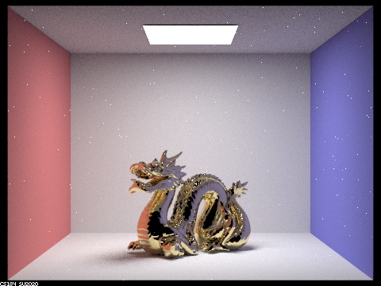
|
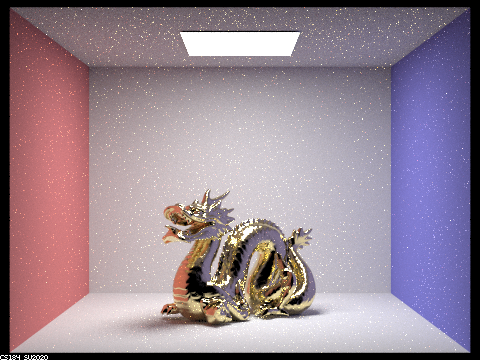
|
|
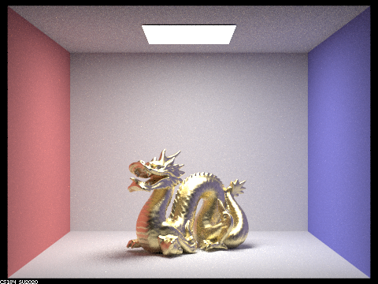
|
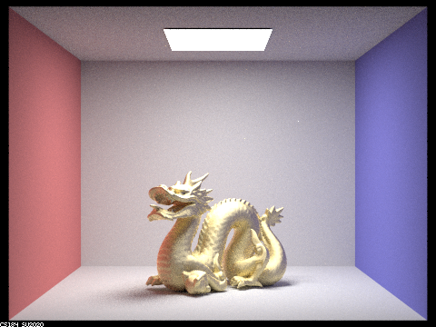
|
As alpha increases, the surface of the object gets rougher (less shiny) and the render scene gets less noisy.
Show two images of scene `CBbunny_microfacet_cu.dae` rendered using cosine hemisphere sampling (default) and your importance sampling. The sampling rate should be fixed at 64 samples per pixel and 1 samples per light. The number of bounces should be at least 5. Briefly discuss their difference.
|
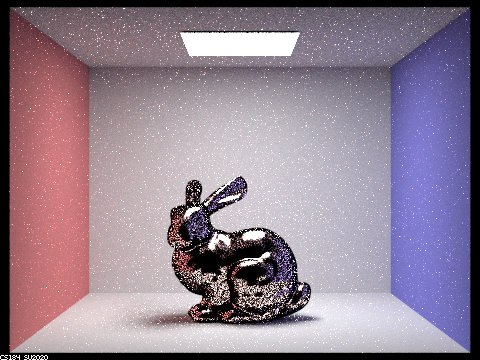
|
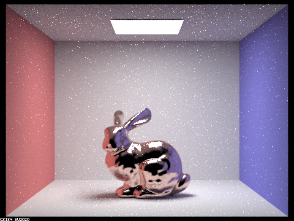
|
Cosine hemisphere sampling gives a rougher result especially around the edge whereas importance sampling is more smooth.
Show at least one image with some other conductor material, replacing `eta` and `k`. Note that you should look up values for real data rather than modifying them arbitrarily. Tell us what kind of material your parameters correspond to.
|
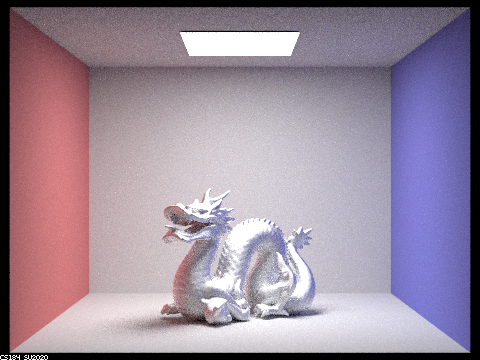
|